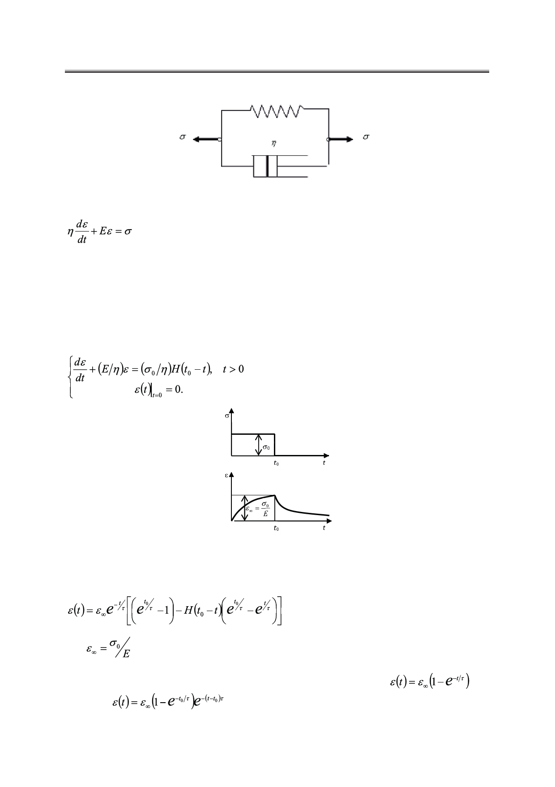

В.Д. Карлов
Рис. 4. Параллельное соединение демпфера и пружины.
, t > 0.
(15)
Здесь, как и выше, могут быть рассмотрены частные случаи напряжения.
Постоянное напряжение (модель Кельвина-Фогта)
Так как начальное напряжение σ0 не может вызывать мгновенную деформацию
(демпфер не дает пружине мгновенно деформироваться), то задача Коши для уравнения
(15) имеет вид (рис. 5):
(16)
Рис. 5. Графики зависимости напряжения и деформации от времени
в случае действия постоянного напряжения на модель Кельвина-Фогта.
Опуская выкладки, приведем конечный результат:
, t > 0,
(17)
где
, если учесть, что деформация возрастает по времени, асимптотически
стремясь к гуковской.
Рассмотрим интервалы времени t < t0 и t ≥ t0. В первом из них
, во
втором –
.
Российский технологический журнал 2017 Том 5 № 5
57